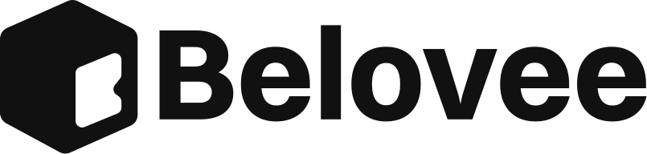

/ WORKSHOP LIVE · SAM. 1 AOÛT 2026 · 20H GMT · 90 MIN
De designer invisible à designer demandé.
En 90 minutes en direct avec Alex, transforme ton talent de designer en une marque qui attire des clients premium (1 000€+), sans démarcher.
/ 90 MIN · EN DIRECT · REPLAY INCLUS · PLACE CRÉDITÉE SUR L'ABONNEMENT VISIBLE
Samedi 1 août 2026
20h00 Afrique de l'Ouest · 90 minutes live ·· jours
TON BRAND BLUEPRINT
Tu le construis avec Alex, en direct.
Une page complète — positionnement, marque, contenu — finie à la fin des 90 min.
/ Pourquoi m'écouter
Je ne théorise pas.
J'ai déjà fait le chemin.
Designer, fondateur de LogoMint, créateur de VISIBLE. J'ai construit le studio qui décroche les marques que les autres designers n'osent même pas démarcher — sans agence, sans DM à froid, sans Malt.
/ Le constat
Tu es un excellent designer.
Mais personne ne le sait.
Tu livres du super travail. Pourtant tu cours encore après les clients, tu te bats sur les prix
sur Malt ou en DM, et tu vois des designers deux fois moins bons que toi décrocher de meilleurs contrats.
Le problème n'est pas ton talent. C'est que tu es invisible — et l'invisibilité, ça te garde fauché.
/ TL;DR · TOUT EN 10 SECONDES
L'essentiel, vite.
15 € une fois — et c'est crédité sur ton premier mois VISIBLE si tu rejoins ensuite.
90 min en direct le samedi 1 août, 20h GMT. Pas dispo ? Replay inclus.
Pour les designers (et créatifs) talentueux mais invisibles. Débutant ou en activité.
Tu repars avec Ton Brand Blueprint, une page construite en live — pas juste des notes.
Les présents en direct reçoivent des bonus exclusifs.
/ Ce qu'on va construire ensemble
3 blocs, finis pendant l'appel.
Pas un cours qu'on écoute. Trois sprints concrets — chaque bloc remplit une partie de ton Brand Blueprint.
Ton positionnement + ton client de rêve.
Ta phrase « J'aide … à … grâce à … » — celle qui te rend impossible à confondre. Plus le portrait précis de ton client de rêve : qui il est, ce qu'il veut, où il traîne.
Ta marque visible + audit de ton profil.
Tes 3 mots de marque et ta direction visuelle. Plus l'audit express de ton profil actuel — note /10 + 3 corrections à appliquer cette semaine.
Ton système d'attraction.
Tes 3 piliers de contenu — les angles qui font venir les clients à toi, sans démarcher. Plus le brief de ton premier contenu-aimant à publier dans les 7 jours.
/ Ce que tu repars avec
Tu ne repars pas avec des notes. Tu repars avec un plan.
Ton Brand Blueprint : le plan complet de ta marque-aimant, sur une seule page, construit avec toi en direct pendant les 90 min.
Mon positionnement
La phrase « J'aide … à … grâce à … ».
+ Le client de rêve
Ma direction de marque visible
3 mots de marque + direction visuelle.
+ Audit /10 du profil + 3 corrections
Mon système d'attraction
3 piliers de contenu.
+ Premier contenu-aimant
Mon prochain pas
La 1re action concrète sous 48h.
+ Ton point de départ
/ Ce qui est inclus
6 choses dans ton billet. 84 000 FCFA de valeur.
Et c'est crédité sur ton premier mois si tu rejoins l'abonnement VISIBLE après le workshop.
/ Réservé aux présents en direct
Deux bonus qui ne reviennent jamais.
Le replay couvre tout le workshop. Mais ces deux bonus, eux, ferment au démarrage du live — et n'apparaissent dans aucun replay.
Audit en direct de ton positionnement.
Alex revoit ta phrase « J'aide … à … » en live devant tout le monde. Repartis avec une formulation validée — pas une hypothèse.
Q&A étendu, sans limite de temps.
On reste après les 90 min jusqu'à épuisement des questions. Tu poses la tienne ; Alex y répond avec son écran et ton cas.
/ La preuve
Les témoignages arrivent. La preuve est déjà là.
VISIBLE, c'est le système exact qui a bâti LogoMint. Tu rejoins la toute première promo — les premiers témoignages, c'est vous qui allez les écrire. En attendant, regarde le travail.

/ On joue franc-jeu
Pour toi. Ou pas du tout.
Pour toi si
- Tu es bon dans ton métier mais personne ne le sait encore.
- Tu veux des clients premium sans devoir démarcher.
- Tu es prêt à passer à l'action — pas juste à écouter.
- Tu vends un service (design, dev, montage, conseil…).
Pas pour toi si
- Tu cherches une recette magique « 10K€/mois sans rien faire ».
- Tu ne vends aucun service ni produit créatif.
- Tu refuses d'agir tant que tout n'est pas « parfait ».
- Tu attends qu'on te livre du clé-en-main sans participer.
/ Ton billet
Workshop N°01.
/ Inclus dans ton billet
- Atelier live 90 min
- Worksheet en direct
- Replay à vie
- Pack templates
- Bonus en direct
- Crédit 15€ sur abonnement VISIBLE
/ Heure locale
Où que tu sois, voilà ton créneau.
/ Ton prof
Alex Landrin.
Designer · Fondateur de LogoMint
Il y a quelques années, je galérais comme la plupart des designers africains :
du super travail, zéro client premium. J'avais le talent — pas la visibilité.
Le déclic est venu en arrêtant de me vendre comme « designer freelance »
et en construisant LogoMint
en mettant mon personal branding en avant —
le studio qui attire désormais les marques au lieu de les chasser.
Avec VISIBLE,
je transmets le système exact que j'ai utilisé. Aucune théorie. Que du terrain.
/ FAQ
Les questions que tu te poses.
Et si je ne peux pas être là en direct ?
C'est pour moi si je débute ? Ou si je suis déjà avancé ?
Comment je paie ?
Les 15 € sont vraiment crédités ?
Qu'est-ce que je repars avec ?
J'ai besoin de quoi ?
/ Dernière chose
De designer invisible
à designer demandé.
Le 1 août à 20h00 GMT, Alex démarre. Tu repars 90 min plus tard avec Ton Brand Blueprint fini dans la main.
⚠ Bonus en direct & tarif ferment au démarrage